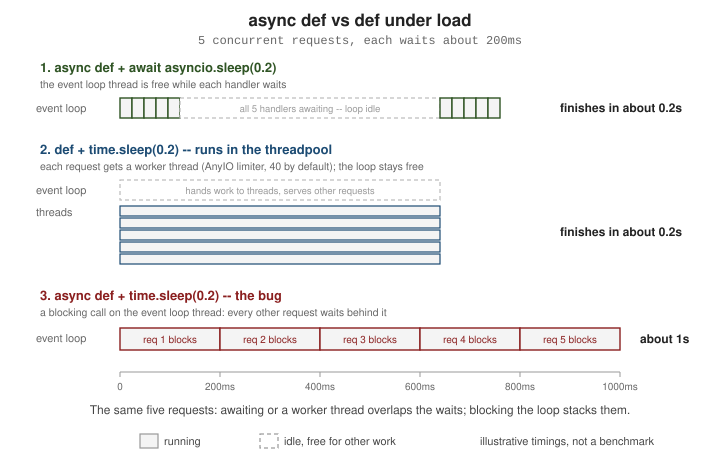

Async & Concurrency
|
This content was generated with the assistance of AI and should be verified against the official documentation before being relied on in production. |
This page is written against FastAPI 0.142.2 (released 2026-09-30), Pydantic 2.13, Starlette 1.7 and AnyIO 4.15, checked
on 2026-10-02. FastAPI supports Python 3.10 through 3.14; the code and timings below come from Python 3.13 and are
illustrative — they vary with hardware. The asyncio library itself is covered in the Python Reference, in
Concurrency & Async; this page is about what FastAPI
does with async def and def, and how to choose.
In a Hurry: The Decision Rule
The official documentation boils the choice down to a few lines:
-
If a library you call must be awaited (
results = await some_library()), declare your function withasync def. -
If a library that talks to something (a database, an API, the file system) has no
awaitsupport — true of many database drivers — declare the function with plaindef. -
If your code does not communicate with anything and never has to wait for a response, use
async def, even without anyawaitinside. -
If you do not know, use plain
def. -
You can mix
defandasync deffreely; FastAPI does the right thing with each.
In every case FastAPI stays fast, but following these rules lets it make optimizations. Two things are not a
matter of taste: you can only use await inside async def, and anything that blocks must not run directly inside
async def (see What Blocks the Event Loop, and How to Fix It).
async def vs def: Path Operations and Dependencies
FastAPI treats the two kinds of function differently, for path operation functions and for dependencies alike:
-
An
async deffunction is a coroutine. FastAPI awaits it on the event loop thread, so while it is waiting for I/O the loop can serve other requests. -
A plain
deffunction is not called on the event loop. FastAPI runs it in an external threadpool and awaits that, so a blocking function only blocks its own worker thread.
Utility functions that you call yourself are not touched: a def helper is called directly (on whatever thread called
it), an async def helper must be awaited. The threadpool rule applies only to what FastAPI calls for you — path
operations, dependencies and sub-dependencies. The snippet below records which thread each function ran on:
import threading
from typing import Annotated
from fastapi import Depends, FastAPI
from fastapi.testclient import TestClient
app = FastAPI()
seen: dict[str, int] = {}
def sync_dep(): # `def` dependency -> threadpool
seen["def dependency"] = threading.get_ident()
return 1
async def async_dep(): # `async def` dependency -> event loop
seen["async dependency"] = threading.get_ident()
return 2
@app.get("/mixed")
def mixed(a: Annotated[int, Depends(sync_dep)], b: Annotated[int, Depends(async_dep)]):
seen["def path operation"] = threading.get_ident() # `def` path operation -> threadpool
return a + b
@app.get("/direct")
async def direct():
seen["async path operation"] = threading.get_ident()
return 1
client = TestClient(app)
client.get("/mixed")
client.get("/direct")
loop_thread = seen["async path operation"]
for name, ident in seen.items():
print(f"{name:22} runs on the event-loop thread: {ident == loop_thread}")Both def functions ran off the event-loop thread, and both async def functions on it. For a path
operation with Depends, you can mix the kinds in one request: the def dependency is called on a worker thread, the
async def one is awaited on the loop.
Sync and async do not change what is documented: for the same signature, the generated OpenAPI documents are identical.
from fastapi import FastAPI
sync_app, async_app = FastAPI(), FastAPI()
@sync_app.get("/books")
def read(limit: int = 20) -> dict:
return {}
@async_app.get("/books")
async def read(limit: int = 20) -> dict: # noqa: F811 - same name on purpose
return {}
print("identical OpenAPI documents:", sync_app.openapi() == async_app.openapi())The Event Loop and the Threadpool
Think of the event loop as one thread that interleaves many tasks. A task runs until it reaches an await on something
that is not ready yet; then the loop switches to another task. That works superbly for I/O-bound work — network,
database, disk — where the program spends most of its time waiting, which describes most web back ends. It fails when
a task never yields: a long computation, time.sleep(), or a blocking driver call holds the only thread, so every
other request waits.
The threadpool is the escape hatch. Starlette and FastAPI use AnyIO’s worker threads (anyio.to_thread.run_sync) for
the situations where code may block:
-
synchronous (
def) path operations and dependencies; -
FileResponseand file uploads (UploadFile); -
synchronous background tasks.
The pool is limited: AnyIO’s default limiter allows 40 worker threads at a time, and calls beyond that wait for a free thread (see Tuning the Thread Limit).
The next program sends five concurrent requests, each of which "waits" 0.2 seconds, to three versions of an endpoint:
import asyncio, time
import httpx
from fastapi import FastAPI
app = FastAPI()
@app.get("/async-sleep") # cooperative: yields to the event loop while waiting
async def async_sleep():
await asyncio.sleep(0.2)
return {"kind": "async def + await asyncio.sleep"}
@app.get("/sync-sleep") # blocking call, but FastAPI runs `def` in the threadpool
def sync_sleep():
time.sleep(0.2)
return {"kind": "def + time.sleep"}
@app.get("/blocking-in-async") # the bug: blocks the whole event loop
async def blocking_in_async():
time.sleep(0.2)
return {"kind": "async def + time.sleep (BAD)"}
async def burst(path: str, n: int = 5) -> float:
transport = httpx.ASGITransport(app=app)
async with httpx.AsyncClient(transport=transport, base_url="http://test") as client:
start = time.perf_counter()
await asyncio.gather(*(client.get(path) for _ in range(n)))
return time.perf_counter() - start
async def main():
for path in ("/async-sleep", "/sync-sleep", "/blocking-in-async"):
print(f"{path:22} {await burst(path):.2f}s for 5 concurrent requests")
asyncio.run(main())On the machine used to prepare this page it printed about 0.20 s for the cooperative async def, about 0.25 s for the def endpoint
(five threads sleeping at once) and about 1.04 s for the async def endpoint that calls time.sleep — roughly five
times 0.2 s, because the blocking call held the event loop and the five requests were served one after another.
The numbers will differ on your machine; the ratios are the point.

A frequent misconception: “def` is slow, so always use async def”. For plain `def, FastAPI pays a small cost to hop
to a thread. For a trivial compute-only function the documentation warns that using def for a "tiny performance
gain" is the opposite in FastAPI: use async def there, unless the function performs blocking I/O.
What Blocks the Event Loop, and How to Fix It
Inside an async def function, avoid anything that waits without await:
-
time.sleep()— useawait asyncio.sleep()(oranyio.sleep()); -
synchronous HTTP clients (
requests) — use an async client such as HTTPX’sAsyncClient; -
synchronous database drivers and ORMs (psycopg2-style blocking sessions) — use an async driver and session, or declare the handler with
def; -
blocking file or subprocess calls — use async file libraries, or run them in a thread;
-
CPU-bound work (image processing, large parsing, model inference, hashing) — this is not helped by
async defat all, see below.
Pick the least invasive fix:
| Situation | Fix |
|---|---|
The whole handler is blocking |
Declare it with plain |
One blocking call inside an otherwise async handler |
|
A blocking library with an async twin |
Use the async library: |
CPU-bound work |
A process pool ( |
Long-running or retryable work after the response |
A background task for short jobs, a queue plus workers for anything that must survive a restart (see Settings, Lifespan & Background Tasks). |
import asyncio, time
import anyio.to_thread
import httpx
from fastapi import FastAPI
from fastapi.concurrency import run_in_threadpool
app = FastAPI()
def blocking_report() -> str: # sync driver, file parsing, requests.get(), ...
time.sleep(0.2)
return "done"
@app.get("/threadpool")
async def threadpool():
result = await run_in_threadpool(blocking_report) # FastAPI/Starlette helper
return {"result": result}
@app.get("/anyio")
async def with_anyio():
result = await anyio.to_thread.run_sync(blocking_report) # same thing with AnyIO directly
return {"result": result}
async def main():
transport = httpx.ASGITransport(app=app)
async with httpx.AsyncClient(transport=transport, base_url="http://test") as client:
for path in ("/threadpool", "/anyio"):
t = time.perf_counter()
rs = await asyncio.gather(*(client.get(path) for _ in range(5)))
print(path, [r.json()["result"] for r in rs][:1], f"{time.perf_counter()-t:.2f}s")
print("default limiter tokens:", anyio.to_thread.current_default_thread_limiter().total_tokens)
asyncio.run(main())Source: Starlette: Thread Pool
Both versions finish five 0.2 s calls in about 0.2 s, and the script prints 40 for the default limiter. AnyIO and
Starlette use the same mechanism; run_in_threadpool is just the shortest spelling when you already import from
FastAPI. Asyncer, a small library by the FastAPI author on top of AnyIO, offers
friendlier typed wrappers (such as asyncify) if you mix sync and async code a lot.
For CPU-bound work, offload to processes, not threads:
import asyncio
from concurrent.futures import ProcessPoolExecutor
import httpx
from fastapi import FastAPI
pool: ProcessPoolExecutor | None = None
def fib(n: int) -> int: # CPU-bound: never run this on the event loop
return n if n < 2 else fib(n - 1) + fib(n - 2)
from contextlib import asynccontextmanager
@asynccontextmanager
async def lifespan(app: FastAPI):
global pool
pool = ProcessPoolExecutor(max_workers=2)
yield
pool.shutdown()
app = FastAPI(lifespan=lifespan)
@app.get("/fib/{n}")
async def compute(n: int):
loop = asyncio.get_running_loop()
result = await loop.run_in_executor(pool, fib, n)
return {"n": n, "fib": result}
async def main():
async with app.router.lifespan_context(app):
transport = httpx.ASGITransport(app=app)
async with httpx.AsyncClient(transport=transport, base_url="http://test") as c:
print((await c.get("/fib/25")).json())
if __name__ == "__main__":
asyncio.run(main())fib runs in a worker process, so the event loop stays free and a second core is used. Create the pool once (in the
lifespan, as here) rather than per request, and size it to your CPU count. Process pools have costs: arguments and
results are pickled, and workers must not share in-memory state with the web process. For heavy or long jobs, hand off
to a task queue instead; see Messaging for the broker side of that design.
Tuning the Thread Limit
If many concurrent requests are blocked in def handlers or run_in_threadpool calls, the 40-thread limiter becomes the
bottleneck and new calls queue. The limiter can be changed at startup:
import anyio.to_thread
import httpx
import asyncio
from contextlib import asynccontextmanager
from fastapi import FastAPI
@asynccontextmanager
async def lifespan(app: FastAPI):
# AnyIO's default limiter allows 40 concurrent worker threads; raise it deliberately.
limiter = anyio.to_thread.current_default_thread_limiter()
limiter.total_tokens = 100
yield
app = FastAPI(lifespan=lifespan)
async def main():
async with app.router.lifespan_context(app):
print("tokens:", anyio.to_thread.current_default_thread_limiter().total_tokens)
asyncio.run(main())Source: AnyIO: Working with threads
More threads is not automatically better — each costs memory, and a database pool smaller than the thread count only moves the queue elsewhere. Size thread count, connection pool and worker count together, and measure.
Concurrency vs Parallelism
The official page tells the burgers story, which is worth summarizing:
-
Concurrency is one worker interleaving several tasks that spend most of their time waiting. A cashier takes an order, hands out a number and takes the next order while the kitchen cooks. Cheap, and ideal for web back ends: many users, each mostly waiting on a network.
-
Parallelism is several workers doing work at the same time. Several cashier-cooks each handle one order from start to finish, and customers wait in front of the counter. Overkill when the job is mostly waiting, essential when it is mostly working — cleaning a big house: no waiting, only labour, so more cleaners finish sooner.
-
Work that mostly waits is I/O-bound (use
async/await or threads). Work that mostly computes is CPU-bound (use more processes or cores: image and audio processing, computer vision, matrix math in machine learning).
A FastAPI service uses both: concurrency inside one process (the event loop plus the threadpool) and parallelism across
processes (--workers, multiple containers, process pools). For the production side, see
Deployment.
Within one async def, you can also run several awaits concurrently. AnyIO’s task group (or asyncio.gather) starts
them together and waits for all:
import asyncio
import time
import anyio
import httpx
from fastapi import FastAPI
app = FastAPI()
async def fetch_cover(title: str) -> str:
await anyio.sleep(0.2) # stands in for an HTTP call to a covers service
return f"cover-for-{title}"
@app.get("/books/{title}/details")
async def details(title: str):
results: dict[str, str] = {}
async def run(name: str, title: str):
results[name] = await fetch_cover(title)
async with anyio.create_task_group() as tg: # structured concurrency (AnyIO)
tg.start_soon(run, "cover_a", title)
tg.start_soon(run, "cover_b", title)
tg.start_soon(run, "cover_c", title)
return results
async def main():
transport = httpx.ASGITransport(app=app)
async with httpx.AsyncClient(transport=transport, base_url="http://test") as c:
t = time.perf_counter()
r = await c.get("/books/dune/details")
print(r.json(), f"{time.perf_counter() - t:.2f}s")
asyncio.run(main())Source: AnyIO documentation
Three 0.2 s awaits finish in about 0.2 s. If any child task raises, the task group cancels the others, which makes it
safer than fire-and-forget asyncio.create_task calls.
AnyIO
AnyIO is the compatibility layer that Starlette (and therefore FastAPI) is built on: it provides the primitives
used above — task groups, sleep, memory object streams, to_thread.run_sync, from_thread.run — and runs on the
asyncio backend (the default) or on Trio. Practical consequences:
-
Prefer
anyio.sleep()orawait asyncio.sleep()in examples that must work with either backend; code that usesasyncio.*directly is tied to asyncio. -
Tests that exercise async code use the AnyIO pytest plugin (
@pytest.mark.anyio), covered in Testing. -
Starlette’s synchronous-to-asynchronous bridge in
TestClientalso relies on AnyIO.
Free-Threaded Python (3.14t)
On a standard CPython build a global interpreter lock (GIL) lets only one thread execute Python bytecode at a time, so
extra threads do not speed up CPU-bound Python code (they still help with blocking I/O, because the lock is released
while waiting). Python 3.13 introduced an experimental free-threaded build (PEP 703) and the 3.14 series offers a free-threaded
variant, commonly called 3.14t, in which threads can run Python code in parallel. FastAPI added support for free-threaded
Python 3.14t in 0.136.0 (2026-04-16).
You can check at runtime whether the GIL is active:
import sys
print(sys.version.split()[0], "GIL enabled:", sys._is_gil_enabled())What this means in practice:
-
On a free-threaded interpreter, the threadpool behind
defhandlers can in principle use several cores, which changes the calculus for CPU-bounddefcode. The page’s examples were run on a standard 3.13 build with the GIL enabled, so no free-threaded measurement is claimed here; measure your own workload before relying on it. -
Free-threaded builds require every compiled dependency to support them, and shared mutable state needs real locking (see the next section). Treat it as a deployment option to evaluate, not a default.
Pitfalls
-
Blocking inside
async def. The most expensive mistake: nothing crashes, the service just stops scaling. Symptoms are high latency under concurrent load with idle CPU. Fixes are in What Blocks the Event Loop, and How to Fix It. -
Forgetting
await. Calling anasync defhelper withoutawaitreturns a coroutine object instead of the value (first example below). -
Shared mutable state in
defhandlers.defhandlers run on several threads at once, so a module-level counter or cache needs a lock (the same applies on free-threaded Python); see the second example below. -
awaitin adef. It is a syntax error; make the functionasync def, or call the sync code. -
Thread-pool starvation. If every worker thread is blocked, even trivial
defendpoints queue. Keep blocking calls short, set timeouts on every external call, and size the pool deliberately. -
Sync ORM sessions inside
async def. A blocking session insideasync defblocks the loop; usedefhandlers or an async engine (see SQL Databases with SQLModel). -
Assuming
asyncis faster. It improves concurrency under I/O waits; a single request is not faster, and CPU-bound code gets no benefit.
A Missing await
from fastapi import FastAPI
from fastapi.testclient import TestClient
app = FastAPI()
async def load_book() -> dict:
return {"title": "Dune"}
@app.get("/bad")
async def bad():
return load_book() # missing await: returns a coroutine object
@app.get("/good")
async def good():
return await load_book()
c = TestClient(app, raise_server_exceptions=False)
print(c.get("/bad").status_code, c.get("/good").json())The /bad route answers 500 (the coroutine object cannot be serialized) while /good returns the book; Python also warns
that the coroutine was never awaited. A type checker flags this mistake, which is one more reason to run one.
Shared State and Locks
import threading
from collections import Counter
from fastapi import FastAPI
app = FastAPI()
hits: Counter[str] = Counter()
lock = threading.Lock()
@app.get("/count")
def count() -> dict[str, int]:
# `def` handlers run in several threads at once: protect shared mutable state.
with lock:
hits["count"] += 1
return {"count": hits["count"]}Without the lock, two worker threads can interleave the read-modify-write of the counter. Better still, keep such state out of the process (a database, Redis) so that several workers or containers see the same value.
Where Older Guides Are Outdated, and What Changed Recently
-
Older guides, and many code bases migrated from Flask, call
requestsor a synchronous driver insideasync defhandlers. That worked in tutorials and fell apart under load; the current documentation’s rule is the one in In a Hurry: The Decision Rule. -
Python 3.14 support was added in 0.118.3 (2025-10-10) and free-threaded 3.14t in 0.136.0 (2026-04-16); support for Python 3.8 and 3.9 was dropped in 0.125.0 and 0.129.0.
-
Streaming responses can also be generated by sync or async generators; see Streaming, JSON Lines & SSE.